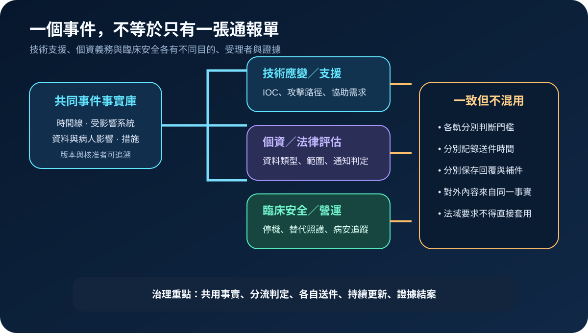
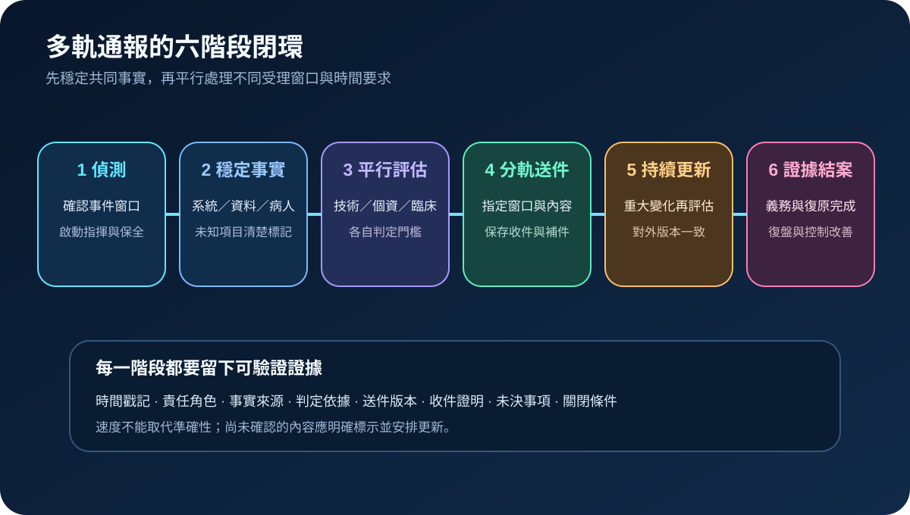
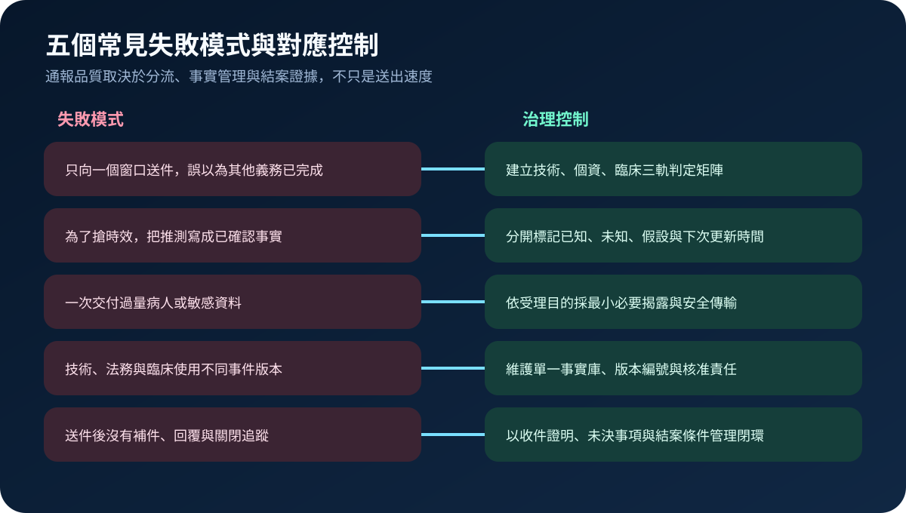

醫療資安國際觀察 · 2026-11-07
醫療資安事件為何不能只報一次：技術通報、個資評估與臨床證據分流
作者：Dr. William｜醫療資訊與資安治理實務工作者
醫療資安事件的技術回報、個資外洩判定與臨床安全處置目的不同；向單一窗口送件，通常不能替代其他軌道的評估與證據責任。
名詞解釋：事件回報、外洩通知與共同事實庫
事件回報用於取得技術協助、分享攻擊指標或履行特定資安事件要求。外洩通知著重受保護資料是否遭未授權存取、使用或揭露，以及應通知哪些對象。臨床安全通報則處理停機、延誤、錯誤資料或設備異常是否影響病人照護。共同事實庫保存一致的時間線、系統範圍、資料與病人影響、處置措施、未知事項及版本核准紀錄。
國際現況與適用邊界
美國 HHS OCR 於 2026 年 10 月發布醫療資安通訊，特別說明依 CIRCIA 向 CISA 提交的資安事件報告，不能取代 HIPAA 違規事件的風險評估與通知責任。CISA 的事件回報入口則同時承接事件、弱點、惡意軟體與網路釣魚等不同類型資訊，並可作為尋求協助的管道。NIST SP 800-61r3 將事件回應納入整體資安風險管理，要求從偵測、回應到復原持續保留決策與改善證據。
台灣適用原則：美國 CIRCIA、HIPAA 與 CISA 受理機制不是台灣醫療機構的法定通報規則。可採用的是「共同事實、分軌判定、最小揭露、持續更新與證據結案」的方法；實際對象、門檻與期限仍應依台灣法規、主管機關要求、院內病人安全制度、契約及事件性質確認。
規劃：先建立通報矩陣，再等事件發生
治理範圍應涵蓋資安、醫療資訊、個資保護、法務、病人安全、臨床單位、公關、供應商與高階事件指揮。通報矩陣至少列出事件類型、適用法域、資料類別、病人影響、受理窗口、內部核准者、送件方式、時程來源、更新條件與結案證據。驗收指標可包含初始事實包完成時間、三軌判定完成率、送件版本一致率、收件證明保存率、重大變化重評時間及未決事項逾期率。
實作：六階段完成分流與閉環
- 偵測與保全：確認事件窗口，啟動事件指揮，保留日誌、映像、告警與原始通訊。
- 穩定共同事實：記錄已知的系統、資料、病人與服務影響；未知與假設分開標示。
- 平行評估：技術、個資法律與臨床安全各自依適用規則判定，不以另一軌送件結果代替。
- 分軌送件：只提供受理目的所需資料，使用核准管道並保存送件版本與收件證明。
- 持續更新：影響範圍、攻擊歸因或病人安全狀態有重大變化時，重新評估並補件。
- 證據結案：確認通知、復原、病安追蹤、供應商責任及改善措施均有完成條件與負責人。

風險：報得快，仍可能報錯、報多或漏報
常見失敗包括把技術協助誤當成外洩通知已完成、為搶時效把推測寫成事實、一次交付過量病人資料、不同部門使用不同事件版本，以及送件後未追蹤補件與關閉。控制方式是三軌判定矩陣、已知與未知分離、最小必要揭露、單一事實庫、版本核准及逐軌結案清冊。

可執行清單
- 是否能在事件發生後快速建立單一、可版本化的共同事實包？
- 技術、個資法律與臨床安全是否有分開的判定責任人？
- 每個受理窗口的依據、時程與送件方式是否能回溯官方來源？
- 送件內容是否符合最小必要揭露並使用核准安全管道？
- 是否保存送件版本、收件證明、補件紀錄與未決事項？
- 重大變化是否會觸發重新評估，而非沿用最初結論？
- 結案是否同時確認義務、病安、復原與控制改善完成？
來源
- HHS OCR｜October 2026 OCR Cybersecurity Newsletter（發布：2026-10-29；查閱：2026-11-07）
- CISA｜Report a Cyber Issue（查閱：2026-11-07）
- NIST｜SP 800-61 Revision 3: Incident Response Recommendations and Considerations for Cybersecurity Risk Management（發布：2025-04-03；查閱：2026-11-07）
內容說明
本文依健康台灣深耕計畫相關治理內容整理，並參考 HHS OCR、CISA 與 NIST 官方資料，說明多軌通報、共同事實管理、最小揭露與證據結案；不把美國法規、受理機制或技術指引視為台灣法定要求，也不取代主管機關規範、院內病人安全程序、契約與法律意見。